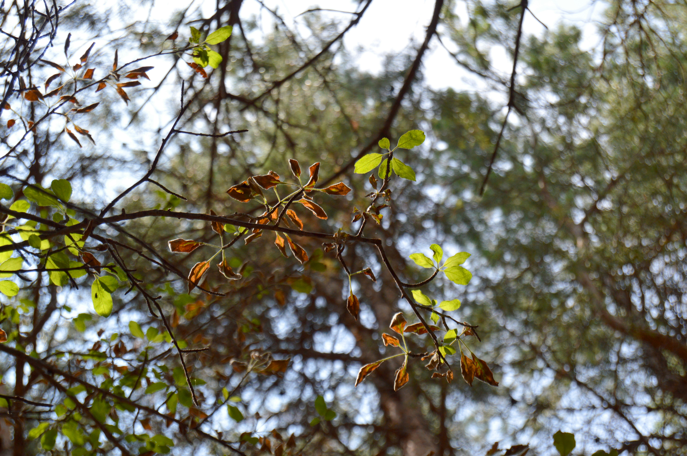

# !dir10 Git, Anaconda (venvs), PEP8
 Կոնդ, լուսանկարի հղումը, Հեղինակ՝ Robert Levonyan
Photo by Robert Levonyan on Unsplash
 (ToDo)
(ToDo)
“GIT - the stupid content tracker”
(c) Linus Torvalds (ամենակարևոր մարդկանցից ՏՏ ոլորտի (վերջն ա էս մարդը))https://github.com/git/git/blob/e83c5163316f89bfbde7d9ab23ca2e25604af290/README
🎦 Տեսադասեր + լրացուցիչ ToDo
ToDo 1. Տեսություն 2025
2. Տեսություն 2023 (ToDo)
3. Գործնական 2025
4. Գործնական 2023 (ToDo)
5. Որոշ տնայինների լուծումներ (ToDo)
Google Forms ToDo
📚 Նյութը
Download Python, Anaconda, VS Code / PyCharm
Terminal recap
| Windows Command | Linux Command | Description |
|---|---|---|
dir |
ls |
Lists the files and directories in the current directory. |
cd |
cd |
Changes the current working directory. |
cd .. |
cd .. |
Goes up one directory level. |
md / mkdir |
mkdir |
Creates a new directory. |
del |
rm |
Deletes a file. |
copy |
cp |
Copies a file. |
move |
mv |
Moves a file or directory. |
ren |
mv |
Renames a file or directory. |
type |
cat |
Displays the contents of a file. |
cls |
clear |
Clears the terminal screen. |
tasklist |
ps |
Lists the running processes. |
help |
man |
Displays help information for a command. |
tree |
tree |
Displays the directory structure in a tree format. |
echo |
echo |
Prints text or variables to the terminal. |
exit |
exit |
Exits the terminal or command prompt. |
find |
grep |
Searches for a specific text string in files. |
attrib |
chmod / chown |
Displays or changes file attributes. |
Note: Use help <command> in Windows or man <command> in Linux to get detailed information about any specific command.
(table may contain mistakes)
Git / Github
- Հայերեն վիդեոների շարք
- Անգլերեն վիդեո
- Download Git from git-scm.com
- Git-ի ստեղծողի մասին հայերեն փոդքասթ
| Git Command | Description |
|---|---|
git init |
Initializes a new Git repository in the current directory. |
git clone <url> |
Clones a repository from a remote URL to your local machine. |
git status |
Displays the status of the working directory and staging area. |
git add <file> |
Adds a file to the staging area. |
git commit -m "<message>" |
Commits the staged changes with a descriptive message. |
git push |
Pushes the committed changes to a remote repository. |
git pull |
Fetches and merges changes from a remote repository into the current branch. |
git branch |
Lists, creates, or deletes branches. |
git checkout <branch> |
Switches to the specified branch. |
git merge <branch> |
Merges the specified branch into the current branch. |
git log |
Displays the commit history. |
git diff |
Shows the differences between files in the working directory, staging area, or commits. |
git reset |
Resets the staging area or working directory to a previous state. |
git stash |
Temporarily saves changes that are not ready to be committed. |
git remote |
Manages remote repository connections. |
git tag |
Creates, lists, or deletes tags for specific commits. |
Note: Use git help <command> to get detailed information about any specific Git command.
Anaconda
- Provides a convenient package and environment manager (conda) for Python and data science packages.
- Simplifies dependency handling and version management.
- Offers a large collection of precompiled libraries for scientific computing (NumPy, Pandas, etc.).
- Works well across different operating systems.
| Conda Command | Description |
|---|---|
conda create -n envname |
Creates a new environment named envname. |
conda activate envname |
Activates the specified environment. |
conda deactivate |
Deactivates the current environment. |
conda list |
Lists installed packages in the current environment. |
conda install package |
Installs a package in the current environment. |
conda update package |
Updates a package to the latest version. |
conda remove package |
Removes a package from the current environment. |
conda env list |
Lists all available environments. |
conda info |
Shows system and environment configuration information. |
pip freeze
PEP8
Python Enhancement Proposals (PEP) are design documents providing information to the Python community, or describing a new feature for Python or its processes or environment. PEP 8 is the style guide for Python code, which provides conventions for writing clean and readable code.
import thisThe Zen of Python, by Tim Peters
Beautiful is better than ugly.
Explicit is better than implicit.
Simple is better than complex.
Complex is better than complicated.
Flat is better than nested.
Sparse is better than dense.
Readability counts.
Special cases aren't special enough to break the rules.
Although practicality beats purity.
Errors should never pass silently.
Unless explicitly silenced.
In the face of ambiguity, refuse the temptation to guess.
There should be one-- and preferably only one --obvious way to do it.
Although that way may not be obvious at first unless you're Dutch.
Now is better than never.
Although never is often better than *right* now.
If the implementation is hard to explain, it's a bad idea.
If the implementation is easy to explain, it may be a good idea.
Namespaces are one honking great idea -- let's do more of those!Misc
- Create a
requirements.txtfile which will contain the list of packages one need to install (with fixed versions) to run your code.
Example:numpy==1.23.4
You can create it withpip freeze > requirements.txtcommand. - Create a
.gitignorefile which will contain the list of files and directories you don’t want to push to GitHub.
Example:.env,__pycache__/,*.pyc - Create a
README.mdfile which will contain the description of your project, how to run it, and any other relevant information.
🎲 10
- ▶️MinutePhysics
- ▶️Video 🔥
- 🇦🇲🎶Սաղսարա
- 🌐🎶Бременские музыканты
- 🤌Կարգին